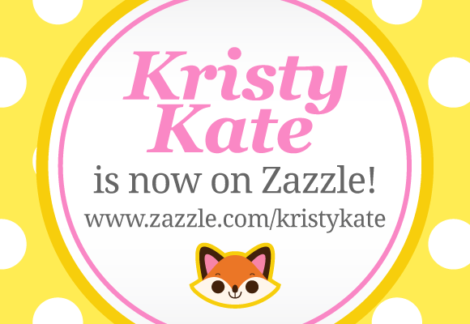

Kristy Kate Zazzle Store Now Open!

Hip-hip-hooray! Kristy Kate designs are now available on Zazzle!
(This has been on my to-do list for a while, so I'm a teensy bit excited!)
I've been a busy bee over the past two weeks uploading all my current designs, so everything you've seen at the conventions I've attended are now available online. I'm especially excited to see my badge/magnet designs start new lives as stickers, keychains, necklaces and even melamine plates!
It's early days and I still have a few more pieces to upload before I start on brand new designs, but if you have a spare moment to drop by the Kristy Kate Store, I'd love to hear your feedback!
Plus, if there's anything you'd like to see added to the collection - be it a new design or an existing design on another product - I'm open to your suggestions. I want to fill the store with plenty of fun, cute and colourful designs to brighten everyone's day.
Here's the link one more time:
Kristy Kate Zazzle Store
All the best,
Kristy Kate
(PS. Big virtual hugs to everyone who can help spread the word. I'd really appreciate it! <3 )